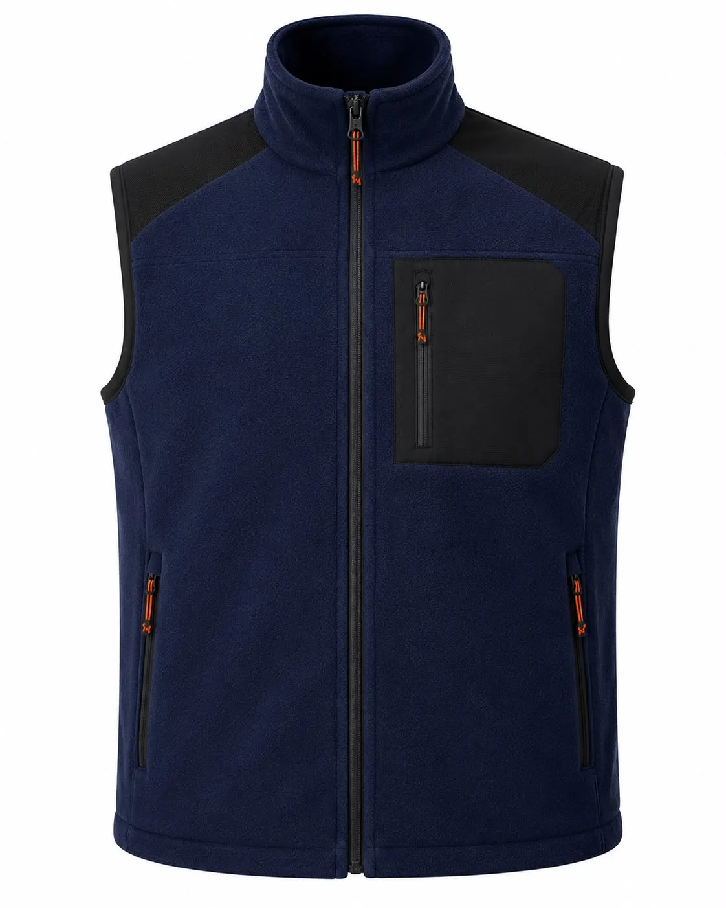

Lacivert Siyah Cepli Polar İş Yeleği
Lacivert Siyah Cepli Polar İş Yeleği (KT-YL-015): Lacivert | Polar kumaş | Siyah göğüs cep paneli | Turuncu fermuar detayı | Dik yaka. Minimum 50 adet özel üretim, kurumsal renk, baskı ve nakış seçenekleri.

Lacivert Siyah Cepli Polar İş Yeleği üretim ayrıntıları
Lacivert Siyah Cepli Polar İş Yeleği, kurumsal ekiplerde görev işlevi ve düzenli görünümü bir araya getirmek üzere planlanan İş yelekleri modellerindendir. Lacivert | Polar kumaş | Siyah göğüs cep paneli | Turuncu fermuar detayı | Dik yaka özellikleri modelin temel çerçevesini oluşturur.
Malzeme seçimi softshell, polar veya dolgulu yüzey üzerinden; çalışma ortamı, vardiya süresi, hareket ve bakım düzeni dikkate alınarak yapılır. Dikiş, cep ve kapama noktaları numunede kontrol edilir.
Logo ölçüsü ve konumu kumaş yüzeyiyle birlikte değerlendirilir. Onaylanan nakış veya baskı uygulaması model koduna bağlanarak tekrar sipariş standardı korunur.
Adet, beden dağılımı, renk, teslimat noktası ve hedef tarih yazılı paylaşıldığında kumaş ve üretim planı netleştirilir. Seri üretim yalnız onaylanan kapsam üzerinden ilerler.
Model özellikleri
- Lacivert
- Polar kumaş
- Siyah göğüs cep paneli
- Turuncu fermuar detayı
- Dik yaka
Sık sorulan sorular
Minimum sipariş kaç adettir?
Bu modelde özel üretim minimum siparişi 50 adettir.
Logo uygulanabilir mi?
Kumaşa göre nakış, DTF, transfer veya serigrafi uygulanabilir.
Farklı renk üretilebilir mi?
Kumaş ve aksesuar uygunluğuna göre kurumsal renk planlanabilir.
Numune hazırlanabilir mi?
Proje kapsamına göre seri üretim öncesinde numune hazırlanabilir.
Beden dağılımı nasıl belirlenir?
Çalışan listesi ve numune kontrolüyle beden dağılımı yazılı onaya alınır.
Teklif için ne gerekir?
Adet, beden, renk, logo, teslimat şehri ve hedef tarih paylaşılmalıdır.
KT-YL-015 için teklif alın.
Ürün, adet, beden ve logo bilgilerinizi paylaşın.